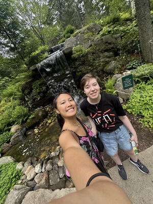

About

Hello, my name is Paige McNamara! I was born in Boston, MA and was raised in the small town of Groton, MA.
From a very young age, I loved to read anything that I could get my hands on, and this quickly evolved into me wanting to tell stories to anyone who would listen. I would spend my time crafting imaginary worlds for me and my friends to immerse ourselves in. As I grew up, I continued to write to better help understand myself and the world around me. It was a way to put to words abstract ideas and feelings that I couldn't in any other way.
My favorite genres to write in are horror and fantasy and other types of speculative fiction. I think that the genre is just rife with extremely creative authors who are in the pulse of today's times and social issues and always have something interesting to say about the world and its people. I want to be someone to help lift up these voices either through my own writing or in helping to publish other people's.